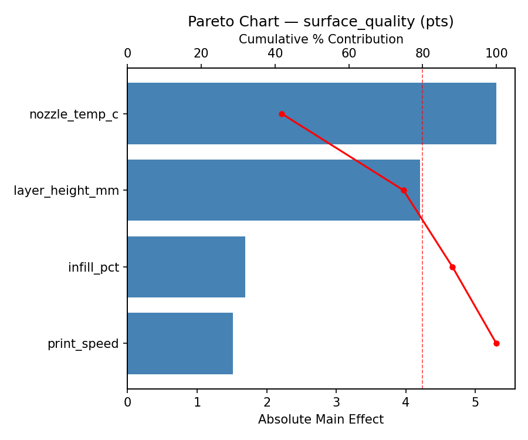
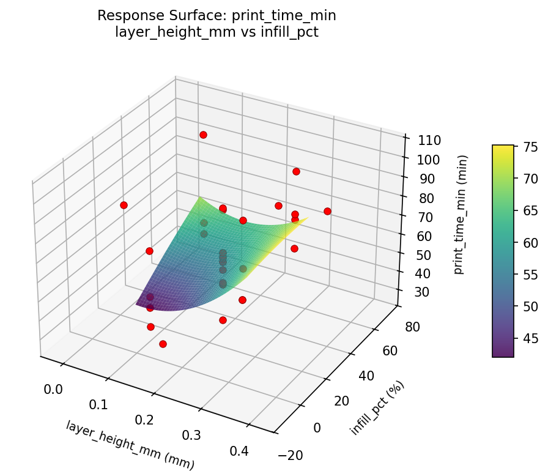
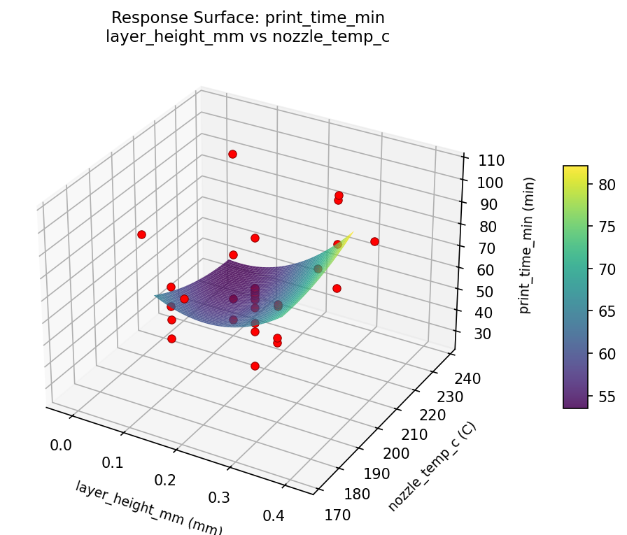
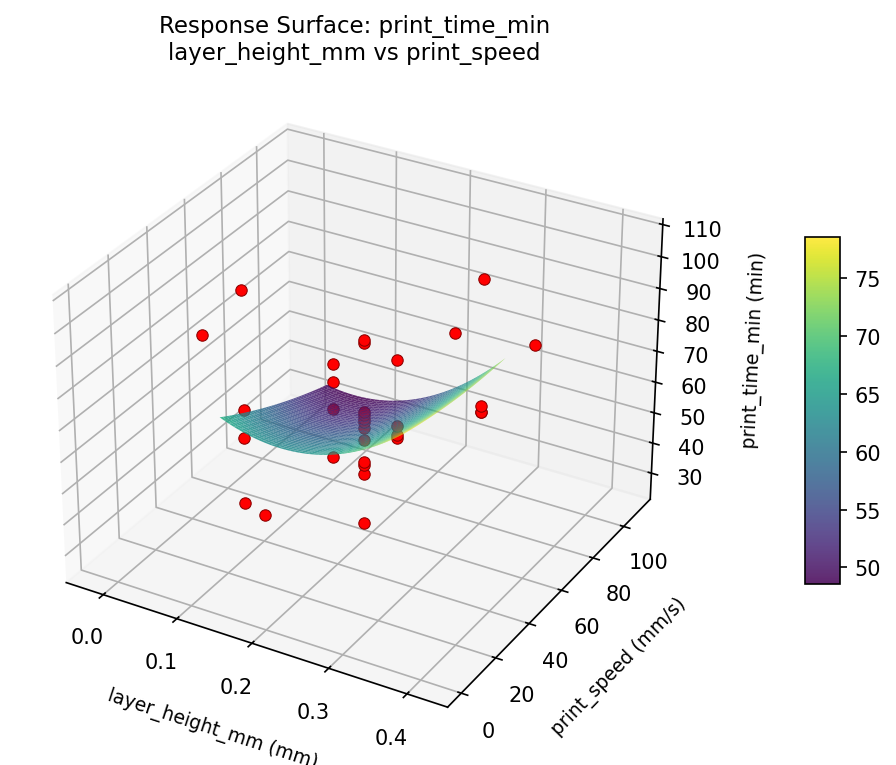
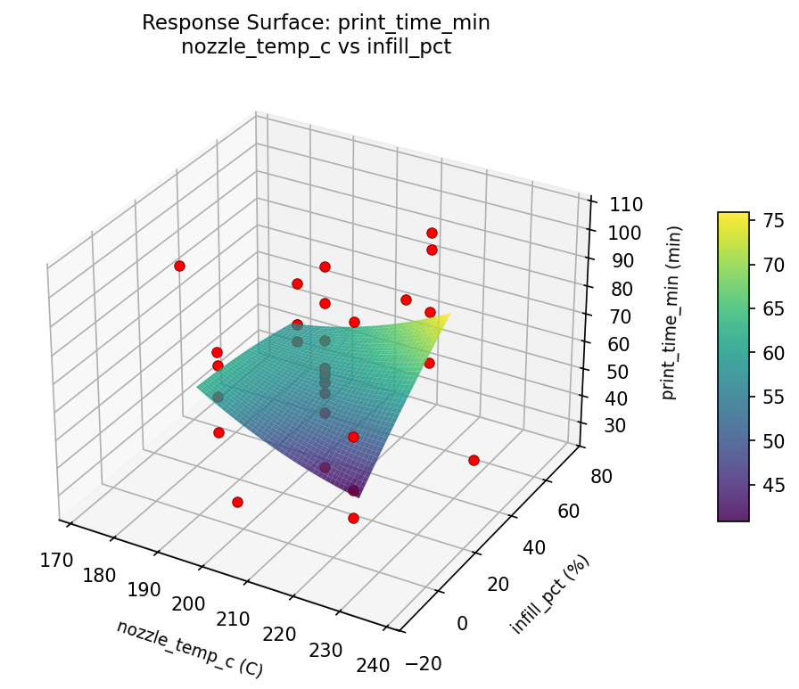
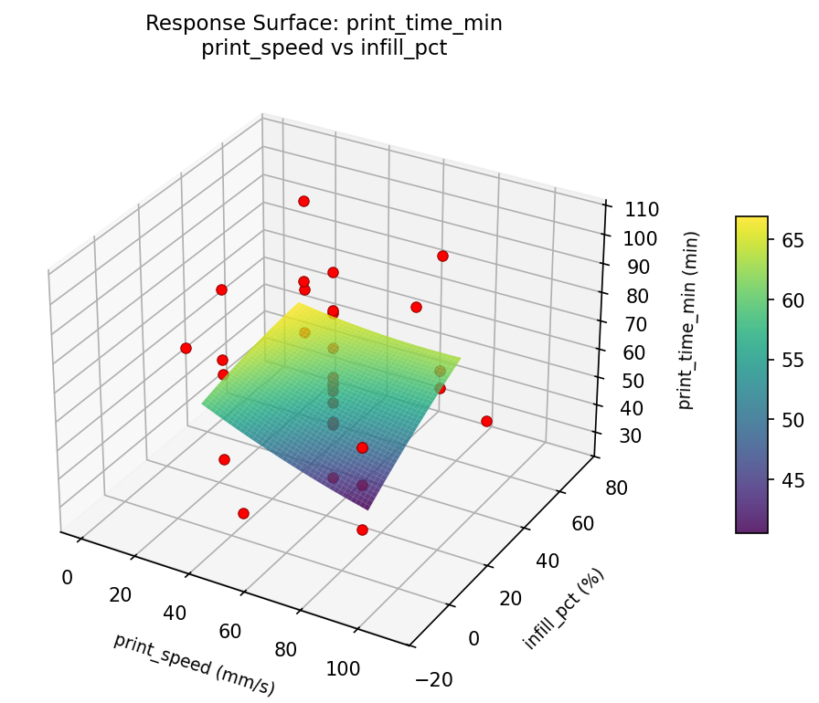
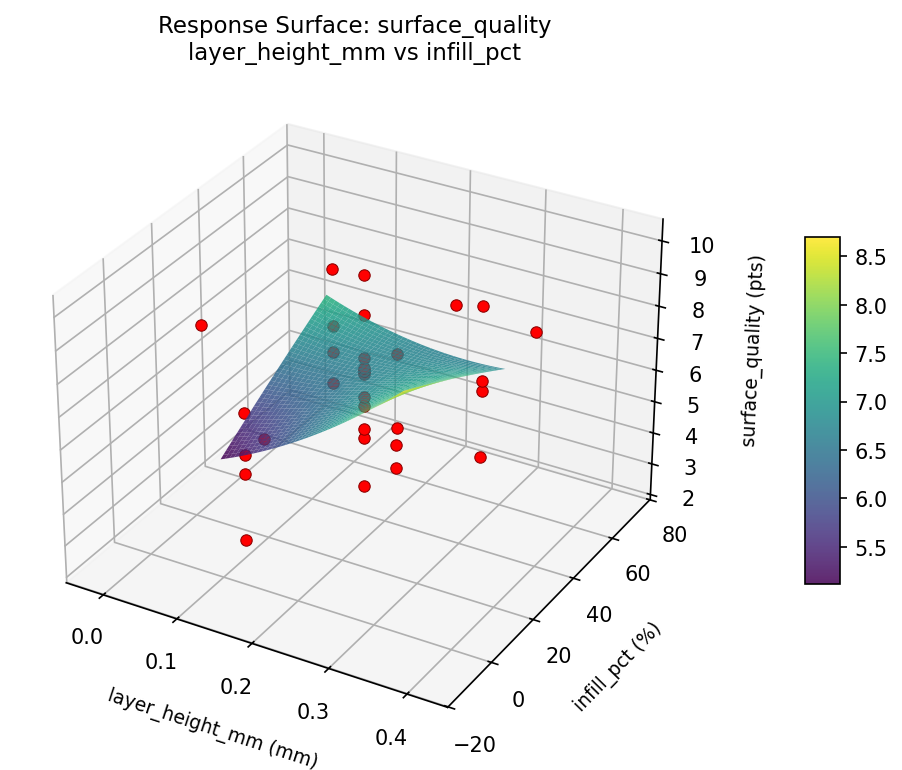
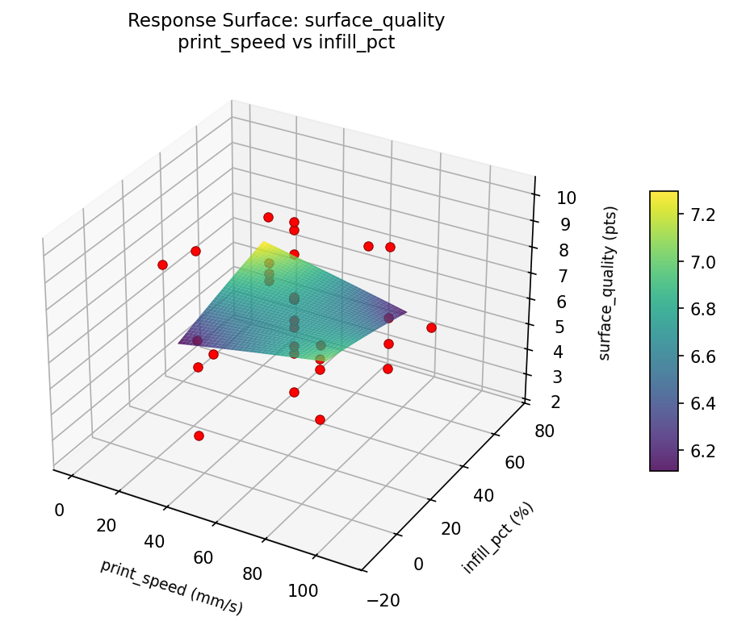
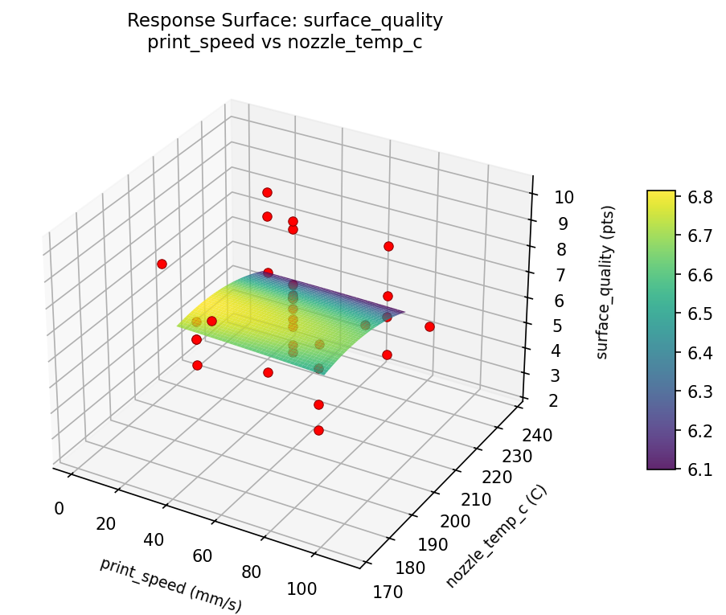

Experimental Setup
Factors
| Factor | Low | High | Unit |
|---|---|---|---|
layer_height_mm | 0.1 | 0.3 | mm |
print_speed | 30 | 80 | mm/s |
nozzle_temp_c | 190 | 220 | C |
infill_pct | 10 | 50 | % |
Fixed: material = PLA, bed_temp = 60C
Responses
| Response | Direction | Unit |
|---|---|---|
surface_quality | ↑ maximize | pts |
print_time_min | ↓ minimize | min |
Configuration
Experimental Matrix
The Central Composite Design produces 32 runs. Each row is one experiment with specific factor settings.
| Run | layer_height_mm | print_speed | nozzle_temp_c | infill_pct |
|---|---|---|---|---|
| 1 | 0.2 | 55 | 205 | -13.8178 |
| 2 | 0.1 | 80 | 190 | 50 |
| 3 | 0.3 | 30 | 220 | 10 |
| 4 | 0.3 | 80 | 220 | 50 |
| 5 | 0.2 | 55 | 237.863 | 30 |
| 6 | 0.3 | 30 | 220 | 50 |
| 7 | 0.2 | 0.227744 | 205 | 30 |
| 8 | 0.1 | 80 | 220 | 10 |
| 9 | 0.2 | 55 | 205 | 30 |
| 10 | 0.3 | 80 | 190 | 10 |
| 11 | 0.2 | 55 | 205 | 30 |
| 12 | 0.3 | 30 | 190 | 50 |
| 13 | 0.2 | 55 | 205 | 30 |
| 14 | 0.3 | 80 | 220 | 10 |
| 15 | 0.2 | 55 | 172.137 | 30 |
| 16 | -0.019089 | 55 | 205 | 30 |
| 17 | 0.2 | 55 | 205 | 30 |
| 18 | 0.1 | 30 | 190 | 50 |
| 19 | 0.3 | 80 | 190 | 50 |
| 20 | 0.2 | 55 | 205 | 30 |
| 21 | 0.1 | 30 | 220 | 10 |
| 22 | 0.2 | 55 | 205 | 30 |
| 23 | 0.419089 | 55 | 205 | 30 |
| 24 | 0.1 | 30 | 220 | 50 |
| 25 | 0.2 | 55 | 205 | 30 |
| 26 | 0.1 | 80 | 190 | 10 |
| 27 | 0.2 | 55 | 205 | 73.8178 |
| 28 | 0.2 | 55 | 205 | 30 |
| 29 | 0.3 | 30 | 190 | 10 |
| 30 | 0.2 | 109.772 | 205 | 30 |
| 31 | 0.1 | 30 | 190 | 10 |
| 32 | 0.1 | 80 | 220 | 50 |
Step-by-Step Workflow
Preview the design
Generate the runner script
Execute the experiments
Analyze results
Get optimization recommendations
Generate the HTML report
Features Exercised
| Feature | Value |
|---|---|
| Design type | central_composite |
| Factor types | continuous (all 4) |
| Arg style | double-dash |
| Responses | 2 (surface_quality ↑, print_time_min ↓) |
| Total runs | 32 |
Analysis Results
Generated from actual experiment runs using the DOE Helper Tool.
Response: surface_quality
Top factors: nozzle_temp_c (41.7%), layer_height_mm (33.1%), infill_pct (13.3%).
Pareto Chart

Main Effects Plot

Response: print_time_min
Top factors: layer_height_mm (32.2%), nozzle_temp_c (30.4%), infill_pct (24.3%).
Pareto Chart

Main Effects Plot

Response Surface Plots
3D surfaces fitted with quadratic RSM. Red dots are observed data points.
print time min layer height mm vs infill pct

print time min layer height mm vs nozzle temp c

print time min layer height mm vs print speed

print time min nozzle temp c vs infill pct

print time min print speed vs infill pct

print time min print speed vs nozzle temp c

surface quality layer height mm vs infill pct

surface quality layer height mm vs nozzle temp c

surface quality layer height mm vs print speed

surface quality nozzle temp c vs infill pct

surface quality print speed vs infill pct

surface quality print speed vs nozzle temp c
